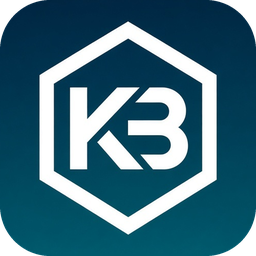
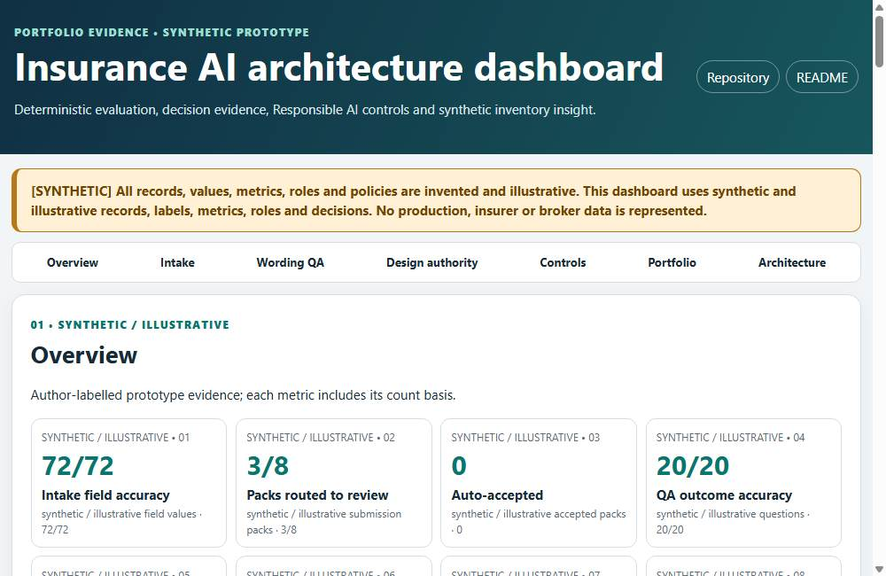
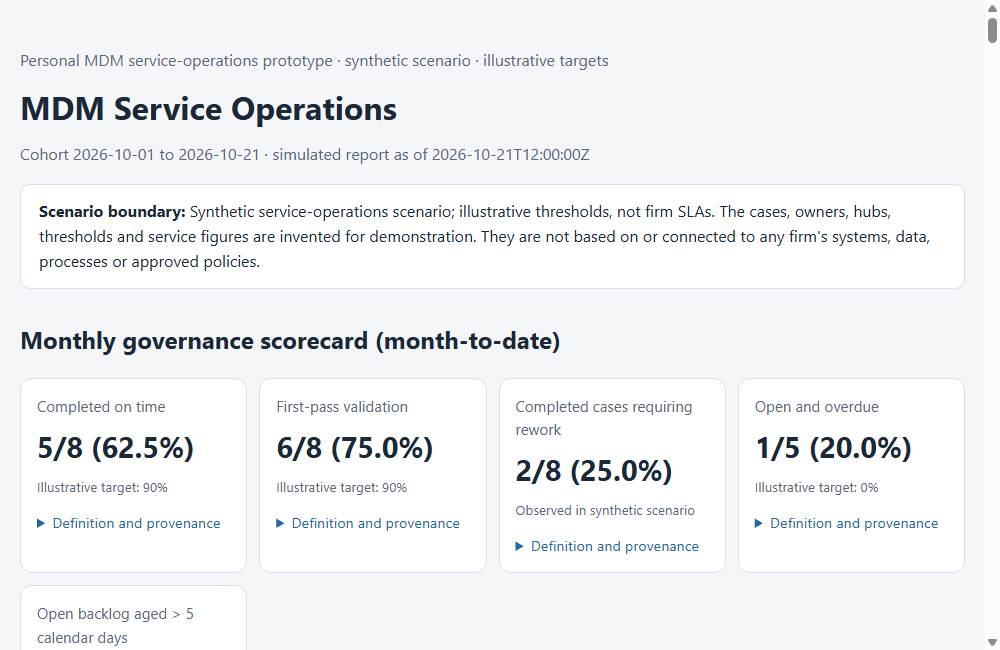
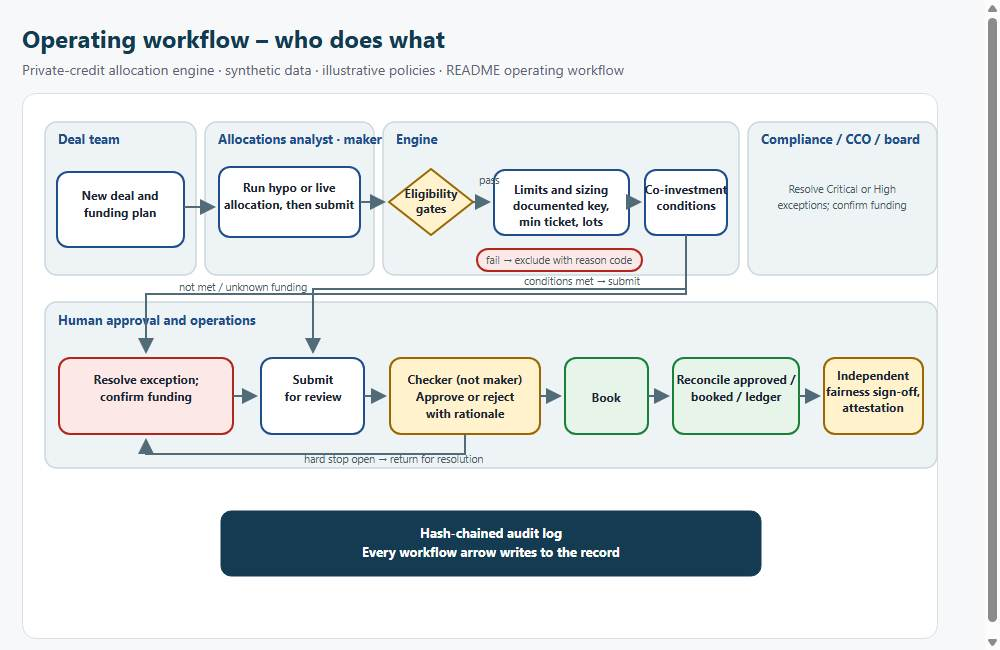

Kakali BandyopadhyayProduct builds for private-markets and hedge-fund workflows – deal intelligence, investment controls and AI adoption.
Personal prototypes on synthetic data with illustrative policies. They are not based on, or connected to, any firm's systems, data or processes.
Featured case study
Deal intelligence: from screening to an evidence-backed IC memo
One deal-team workflow, built end to end: thesis screening with explicit unknowns and conflicts, diligence Q&A where every claim cites its source, version and conflict tracking, and a six-control memo gate before a human investment-committee decision. Three held-out evaluation runs (4/10, 6/8, 7/10), each miss and its cause published.
Featured build

Enterprise AI architecture for a simulated reinsurer
Problem AI use cases scale faster than the standards, reviews and inventory that govern them.
What it does Reference architecture, design-authority gate scoring each use case on eight criteria, decision records, Responsible AI controls with owners, and AI inventory insight.
Evidence Two working use cases (submission intake, cited wording Q&A); 130 tests; synthetic data.
Featured build

Governed data products (entity MDM)
Problem Entity records spread across sources create duplicates, unclear ownership and audit evidence that is hard to produce.
What it does Explainable entity mastering and maker-checker review; CDE ownership and lineage; quality rules, scorecards, audit evidence and purpose-based access.
Evidence 47 tests; matching shown on 20 author-labelled pairs (illustrative, not independent validation); synthetic records and illustrative policies.
Featured build

Private-credit allocation engine
Problem Allocation decisions need eligibility checks, documented sizing, approval and reconciliation.
What it does Eligibility gates, documented sizing, co-investment escalation, maker-checker approval, booking, reconciliation and surveillance.
Evidence 89 tests; every step writes to a tamper-evident, hash-chained audit log; synthetic data.
Other builds
GenAI adoption control tower
For a simulated hedge-fund technology centre: prioritised use cases, risk-tiered stage gates, expand / fix / pause decisions with owners, adoption by cohort, total cost of ownership and follow-up.
Private-credit allocation engine
A solution accelerator prototype for multi-fund deal allocation: eligibility gates, sizing keys, pre-trade regulatory headroom, co-investment escalation, maker-checker approval, reconciliation and an evidence pack per allocation.
Governed data products: entity MDM to marketplace
Entity mastering with explainable match decisions and maker-checker approval; critical data elements with owners and hop-by-hop lineage; SQL data-quality rules tested before activation; country scorecards, an audit evidence pack, purpose-based access requests and an AI-readiness flag per data element.
Enterprise AI architecture for a simulated reinsurer
Reference architecture, a design-authority gate that reviews each use case against eight criteria, architecture decision records, a Responsible AI control matrix with owners, and AI inventory insight on reuse and gaps - backed by two working use cases: submission intake and cited wording Q&A.
How I build
- Narrow first release, explicit exclusions and a trade-off record for every scope decision.
- People make the decisions; the system prepares evidence, checks controls and records who decided what.
- Evaluation reported per run and per question, including the misses; held-out scores are never combined or re-scored after fixes.
- Independent review against a definition-of-done list before anything is published.